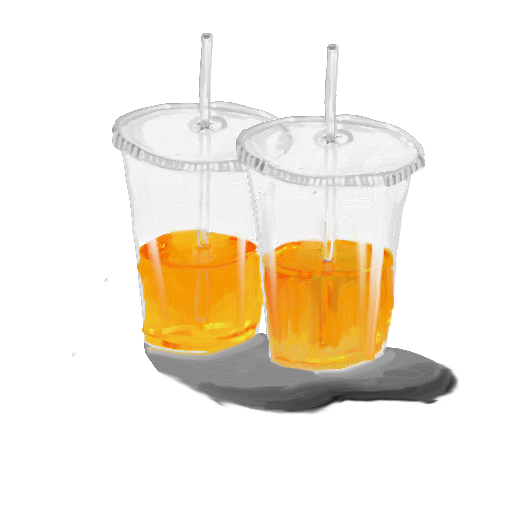

These cups were the first item I observed. I marked them down as "-two plastic cups full of ??? yellow liquid..piss maybe. or juice. there’s straws in the cups ". I still have no clue what was in the cups or why they were left outside the laundromat. Or why there were two. I like to imagine a couple went in to do their laundry and were extremely mindful about the "cleanliness" of a laundromat, so left the juice outside as not to spill.
